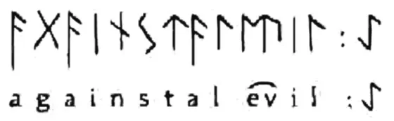

Rune Grimoire
Yew Magick Formula
A translation and magickal adaptation of an ancient formula of yew magick. The single stave representing the yew tree has always been a powerful symbol of protection.

Numerical Analysis
- Rune count: 13 (multiple: 1 x 13 [prime])
- Runic total: 160 (multiple: 10 x 16)
The yew force is reemphasized and brought into material manifestation. See Foundations & Ethics for deeper interpretation.
Special Construction Notes
The long staves on the A-runes distinguish them for a particular interpretation: 3 x 4 = 12, intended to express "the blessings of Ansuz (Ódhinic force) in all three realms of being throughout the year."
Materials
If possible, this tine should be fashioned from yew wood.
Usage
This formula is a strong example of how much depth can be encoded into even a modern English version of a runic formula. It serves as a potent protective talisman anchored in the primal force of the yew tree.